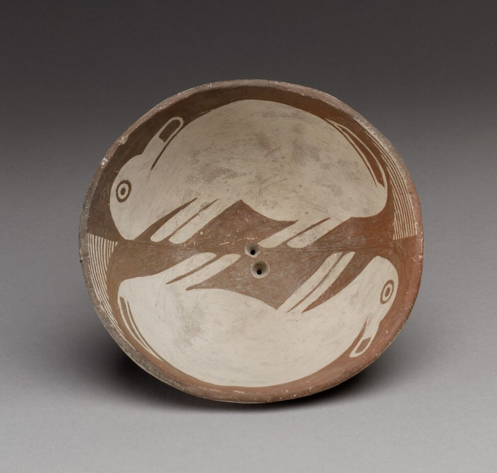

⋆ ⋆୨୧˚Public Domain!⋆୨୧˚
I love you public domain databases.
"The public domain (PD) consists of all the creative work to which no exclusive intellectual property rights apply. Those rights may have expired, be forfeit, waived or may be inapplicable.[1][2][3] Because no one holds the exclusive rights, anyone can legally use or reference those works without permission." - Wikipedia
Public domain means that these images are "fair use", which means that you can repurpose them for your own means, and if you wanted to, you could even make money from the images.
I love the idea of public domain, because it means that someone at some point has to decide if your ideas belong to you anymore, or if they belong to everyone.
At some point after your death, your creations sprout their own legs and walk away.
Like this bowl with two rabbits running across it. The person who made this bowl has been dead for over 1000 years. Their name, their face, is gone forever.
This bowl was made before Capitalism ever existed. The earliest "patent law" was only established as a concept in 1474.
Title: Bowl with Two Rabbits
Date: mid-9th–12th century
Geography: United States, New Mexico
Culture: Mimbres
Medium: Ceramic
Dimensions: H. 2 1/2 x Diam. 5 3/8 in. (6.4 x 13.7 cm)
Classification: Ceramics-Containers